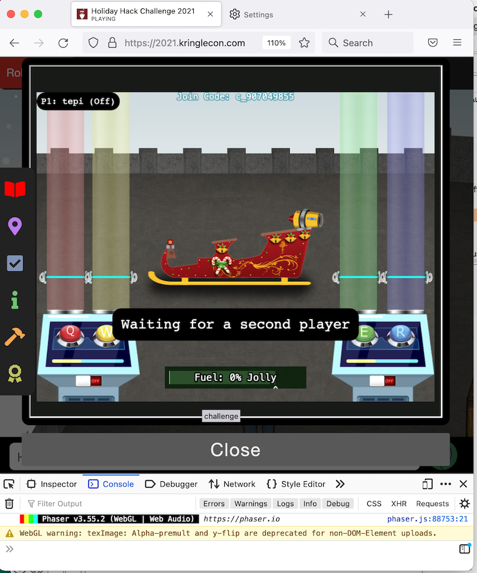
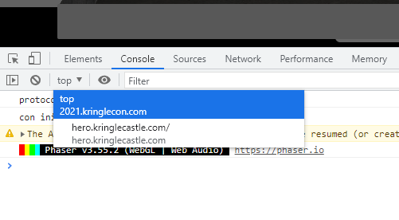

Holiday Hero¶
Location: (Netwar)
Chimeny Scissor challenged us in playing with the Holiday Hero terminal.
He said that playing with that we could full up Santa’s sleigh!
True or not, we accepted the challenge of course and it turned out it was a game to play with 2 players and getting you
crazy in coordinating in order to win it.
Ooook, .. no worry, time to find the way for bypassing the 2 players requirement.
Chimeny suggested that it was possible to play in single mode just by changing 2 parameters, client-side parameters, this means
that we have all it was needed inside our browser :).
Chimney added that one of the 2 is sent to the server.
The challenge is located at: https://hero.kringlecastle.com.
In order to study the logic of the game, we choose to play directly on the server.
Actually, the game is served by the “hero” server and just embedded inside the page of 2021.kringelcon.com by using a
simple HTML iframe.
This will arise some weird behaviour lately, but let’s see the logic of the game.
The First Parameter¶
Reading at the HTTP Requests and Responses sent from our browser and the server, we saw a particular endpoint
GET /discoverc?roomid=c_5682048266 HTTP/2
HTTP/2 200 OK
Server: nginx/1.21.4
Date: Sun, 19 Dec 2021 02:34:45 GMT
Content-Type: application/json; charset=utf-8
Content-Length: 23
Set-Cookie: HOHOHO=%7B%22single_player%22%3Afalse%7D; Path=/; Max-Age=2592000; Secure; SameSite=None
Via: 1.1 google
Alt-Svc: clear
{"is_valid_room":false}
This endpoint is called when you create the room to play (in which to invite the second player).
Of course first thing to do is to set the value to “true” and see what happen in the game.
We are interested at the value of the HOHOHO Cookie.
You can change it directly in your Browser looking in the “Inspect” Panel and searching for Storage -> Cookie.
Apparently … nothing happens but let’s keep it and notice that this should be the parameter Chimeny Scissor talked about saying that there were rumors about 2 parameters, 1 of them sent to the server.
Browser to work with session … send and receive Cookie at every requests they do.

Let's look for second parameter !
The Second Parameter¶
Diving into the javascript files, needed to play the game in the broswer, we found another curious variable: “single_player_mode” in
curl 'https://hero.kringlecastle.com/assets/js/holidayhero.min.js' -H 'User-Agent: Your Kringle Fan :)'
Just by changing its value in the console view of the Inspect Panel will raise the single player mode (to note: we're playing in https://hero.kringlecastle.com).
yes .. ok .. BUT we have to play inside the iframe located in 2021.kringlecon.com to have the challenge completed and get other hints under our user session and it turned out that doing the same easy trick in the javascript console .. nothing happen!!
Do you remember that we are playing inside an iframe? This means that we are isolated from the main window and the javascript console.
So, we have just two way to change it:
1. By hand using the Tools available in the Browser¶
Warning
Every web browser differs a little from the others.
We had no issues at all completing this challenge via browser using Chrome, while we couldn’t find a way to do the same thing with Firefox.
As I said, with the browser’s built-in console we can edit the single_player_mode variable.
Press F12 to enter dev tools. Then go to Console section.
Since we are playing in a frame inside KringleCon website, we have to change to target of the console. Select hero.kringlecastle.com.

Now go to the bottom input field, and write:
single_player_mode = true
The single_player_mode variable is now set to true.
2. Automatically by using Burp Suite¶
we can do all it needs automatically by using an interceptor HTTP Proxy that modifies the script on the fly injecting the correct value.
Easy enough isn’t it? … yep, but we have a constraint here:
because just by setting single_player_mode=!1 (bool:false) ⇒ single_player_mode=!0 (bool: true)
will raise an error in console log because the script, while loading, needs single_player_mode=false in order to correctly initialize the game and all its vars.
We have to find the correct place where to inject what we want to obtain.
By analyzing the file js it appears a function that evaluates if it’s required to enable the single player mode (and that’s just what we are looking for).
(line 77-78 javascript deminified)
spi = setInterval(function() {
single_player_mode && (clearInterval(spi), player2_label.showMessage("P2: COMPUTER (On)"), player2_power_button.anims.play("power_on"), toastmessage.showMessage("Player 2 (COMPUTER) has joined!"), player2_power_button.anims.pause())
}, 100);
So, we found the constraint just here.
Actually, that function requires all the game elements fully loaded otherwise it raises an exception and the game will break.
(note: player2_label and toastmessage are objects with methods and they need to be initialized BEFORE to use them).
We want to enable single_player_mode in an ASYNC way, that is: after all elements have been initialized in the document.
Best thing to do is to use the setTimeout function (run only once) after a minimum time frame of 50 seconds to be sure everything has been loaded.
By using Burp Proxy we can tell it to modify (on the fly) a particular string in the response body to somewhat more useful for us, for example, let’s try:
spi = setInterval(function()
into:
setTimeout(function(){console.log("here we go!");single_player_mode=!0},50000);spi = setInterval(function()

Done!